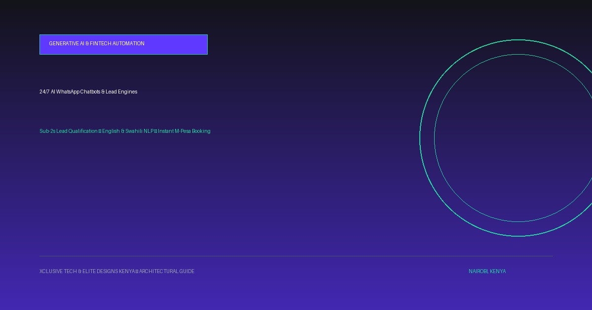

How Kenyan Businesses Are Using 24/7 AI WhatsApp Chatbots & Automated Lead Engines to Double Conversions in 2026
WhatsApp is not merely a messaging app in Kenya—it is the operational operating system of the entire national economy. Over 96% of Kenyan smartphone users check WhatsApp daily. Yet, hundreds of businesses bleed high-value sales every single day because their customer support agents take hours to reply to inquiries or go completely offline after 5:00 PM. Here is how modern businesses deploy 24/7 Conversational AI to qualify leads, answer complex product questions, and trigger instant M-Pesa checkouts.

To convert mobile traffic into paying customers with zero delay, Kenyan businesses must augment their websites with intelligent 24/7 WhatsApp AI agents capable of understanding natural English and Swahili, delivering instant product quotes, calculating loan/ROI figures, and executing Safaricom Daraja STK Push checkouts.
| Operational Metric | Manual Human WhatsApp Support | Autonomous AI WhatsApp Engine (Xclusive Tech) |
|---|---|---|
| Response Speed | 15 minutes to 4+ hours (instant drop-off) | Sub-2 seconds, 24 hours a day, 7 days a week |
| After-Hours Availability | Zero response between 5:00 PM and 8:30 AM | 100% active; captures late-night shoppers and weekend inquiries |
| Language Comprehension | Variable; depends on agent mood | Fluent in English, Swahili, and conversational Sheng context |
| Payment Execution | Manual sending of Paybill/Till numbers | Automated Daraja M-Pesa STK Push triggered right inside the chat |
| CRM & Lead Capture | Lost in WhatsApp chat history | Instant synchronization with Google Sheets, CRM, or Frostwood pipeline |
1. Why Traditional Website Contact Forms Are Dying in Kenya
Kenyan consumers hate filling lengthy web contact forms with 8 mandatory fields, only to be met with the generic message: 'Thank you, we will contact you within 48 business hours.' In 2026, buyers expect instant gratification. If your business doesn't respond within 5 minutes, they have already reached out to three of your competitors on WhatsApp.
By pairing a high-speed website with a direct AI WhatsApp Concierge, visitors transition from passive readers into actively engaged prospects in a single tap.
2. Specialized Industry AI Agents in Action
Our conversational AI engines are not generic scripts—they are custom-trained on your specific business knowledge base, product catalogs, and pricing rules:
- Solar EPCs & Hardware Dealers: Homeowners snap a picture of their KPLC bill or token SMS; the AI vision agent extracts kilowatt-hour consumption and instantly suggests a 3kVA or 5kVA hybrid solar backup package.
- Medical & Dental Practices: The bot triages patient symptoms, verifies insurance accepted (Jubilee, SHA, APA), answers pricing FAQs, and reserves doctor consultation slots.
- Real Estate & Property Developers: Diaspora buyers input their budget and desired estate (Kilimani, Ruiru, Diani) to receive matching unit brochures and schedule physical site visits.
- Car Dealerships: Calculates monthly asset finance repayments and routes pre-qualified buyers to available showroom inventory.
3. Direct Safaricom Daraja M-Pesa STK Push Inside Chat
Closing the sale inside the conversation is the ultimate conversion multiplier. Rather than making customers manually switch between apps, copy a Till number, and type an account number, our AI agent asks for their phone number and initiates an instant Safaricom Daraja STK Push prompt on their phone screen. Once paid, the bot issues an automated PDF receipt directly in the chat.
Frequently Asked Questions
Can the AI WhatsApp bot understand Swahili and local Kenyan phrasing?
Yes. Our models are fine-tuned on Kenyan linguistic context, seamlessly understanding English, Swahili, and common mixed colloquial phrasing (e.g., 'Nahitaji solar system ya nyumba ya vyumba vitatu').
What happens if a customer asks a complex question the AI cannot answer?
The bot includes seamless Human-in-the-Loop escalation. When a question exceeds its confidence threshold, it gracefully alerts your human team on WhatsApp and transfers the conversation without interrupting the customer.
Does this work with official WhatsApp Business API numbers?
Yes. We build on top of Meta's official WhatsApp Cloud API, ensuring verified green-tick eligibility, high-throughput delivery, and zero risk of phone number banning.
How does Xclusive Tech integrate this with our website?
We embed intelligent floating WhatsApp widgets with pre-filled conversational triggers on your website pages, product cards, and pricing tables, funneling visitors directly into automated conversion paths.
Ready to Modernize Your Digital Footprint?
From custom intake portals to 24/7 AI WhatsApp booking systems, we engineer platforms that convert visitors into paying clients with sub-1-second mobile performance on Safaricom 4G/5G.

Lead software engineer and award-winning digital architect. Co-founder of Digitally Fit Web Design Firm of the Year, delivering 120+ live platforms across medical, commercial, legal, and industrial sectors in Kenya.